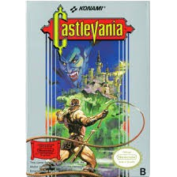

|
 |
"Protagonizado por Simon Belmont, tataraneto de Christopher Belmont que foi
treinado com a experiência dos dois
grandes caçadores de vampiros antes dele. Acontecendo no ano 1691, Simon vai ao encontro de
Dracula neste que seria o primeiro titulo da série Castlevania" |

|
 |
"A história de Simon's Quest se passa cronologicamente após a de Castlevania
(1986), onde o Dracula foi derrotado e deixou uma maldição sobre o protagonista Simon Belmont em
seu último encontro. Com o chicote do clã Belmont, o Vampire Killer, Simon viaja pelo campo
rural da Transilvânia para desfazer a maldição." |
 |
 |
"O ano é 1476 e o Conde Drácula começou a devastar a Europa com um exército de
monstros. Seu único propósito é exterminar a humanidade. O clã dos caçadores de vampiros
Belmont, uma vez exilado da Valáquia, é suplicado pela ajuda da Igreja, já que seus próprios
exércitos foram derrotados." |
 |
 |
"Conhecido como o titulo mais famoso da série Symphony of the Night inicia durante
o final de Rondo of Blood, onde Richter
Belmont confronta e derrota o Conde Dracula. Quatro anos depois, em 1796, Richter some e o
castelo de Dracula reaparece. Alucard chega ao castelo para destruí-lo, encontrando-se
com Maria Renard, que lutou ao lado de Richter e está em sua procura. Alucard encontra
Richter, que afirma ser o novo lorde do castelo." |